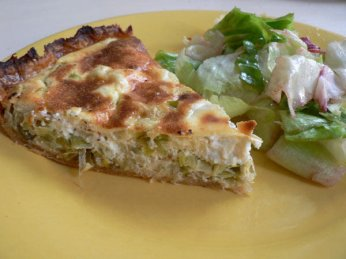

Quiche aux poireaux
Ingrédients
×
- 8 poireaux moyens
- 20 g de beurre
- 1 pincée de quatre-épices
- sel
- poivre
- 20 cl de crème fraîche
- 3 oeufs
- 30 g de fromage râpé
- moutarde
- 1 pâte brisée

Préparation
Étape 1
Couper 8 poireaux moyens en tronçons de 1 à 2cm. Les chauffer dans 20 g de beurre avec 1 pincée de quatre-épices, du sel et du poivre. Couvrir et étuver 30min à feu doux : ils doivent être tendres et avoir rendu leur eau.
Étape 2
Préchauffer le four à 210ºC. Mélanger 20 cl de crème fraîche, 3 oeufs et 1/3 de 30 g de fromage râpé. Saler, poivrer.
Étape 3
Étaler un fond de moutarde puis les poireaux sur 1 pâte brisée, et verser la crème. Cuire 20min à 190ºC.
Étape 4
Parsemer le reste du fromage et gratiner 5min.
Conseils
- Sans pâte : 30cl de lait, 80g de farine et 2 oeufs.
Résumé
8 poireaux moyens
20 g de beurre
1 pincée de quatre-épices
sel
poivre
étuver feu doux
20 cl de crème fraîche
3 oeufs
30 g de fromage râpé
210ºC Mélanger
moutarde
1 pâte brisée
Cuire 190ºC
gratiner